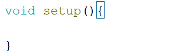
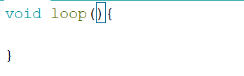
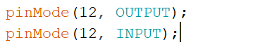
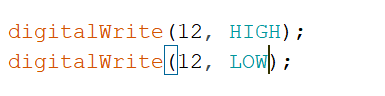
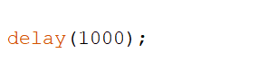
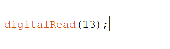
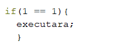
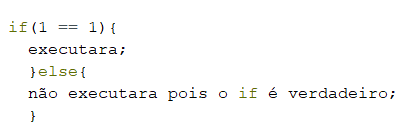
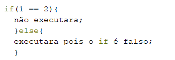

Palavras Reservadas a linguagem
As palavras reservadas a linguagem não podem ser usadas em qualquer lugar , quando escrevemos no editor de código (IDE Arduíno) esses palavras especiais tem a cor da fonte alterada, com o objetivo de mostrar que estão escritas de forma correta e que são palavras reservadas ao código. Vou passar por todas que já vimos até agora e adicionar as outras com forme fomos segundo o semestre, explicar como cada uma funciona e como usá-las.
void setup e void loop
void setup, tem o objetivo de definir quais pinos utilizaremos com quais tipos de sensores ou motores entre outras, o void setup só é executado uma vez no código, por esse motivo ele vem antes do void loop.
A estrutura básica do void setup é a seguinte:
void setup() {}
Os parênteses servem para passarmos parâmetros para a função setup, porém não utilizaremos. Já as chaves é onde montamos a estrutura que vai pertencer ao void setup, de forma mais simplificada todas as configurações precisam estar dentro das chaves. Obs. não podemos ter mais de um void setup.
Exemplo:
void loop, como podemos ver pelo seu nome, tudo que estiver dentro dele executar infinitamente, tudo que queremos que o Arduíno execute repetidamente, por exemplo, piscar um led, a estrutura dele é igual à do void setup:
void loop() {}
Os parênteses e chaves tem a mesma função.
Exemplo:
PinMode
pinMode, como podemos ver são duas palavras separadas por letra maiúscula, pin vem de pino, e mode vem de modo, a estrutura dele é essa:
pinMode(número do pino do arduíno, se ele será de entrada(INPUT) ou saída(OUTPUT) );
Exemplo:
DigitalWrite
digitalWrite, também separado por letra maiúscula o digital vem do pino digital do arduino(do 0 ao 13), write vem de escreta, que significa que passaremos para o arduino se o pino estará ligado ou desligado, sua estrutura é:
digitalWrite(pino que foi configurado como saída no void setup, se será ligado(HIGH) ou desligado(LOW) );
Exemplo:
Delay
delay, o seu nome já diz tudo ele tem a função de fazer uma pausa no meu código, como o código é lido e executado em questões de segundo pelo computador algumas vezes precisaremos usar o delay para que ele espere antes de ler a próxima linha de código, como usá-lo:
delay(tempo que ficará parado);
O tempo tem que ser escrito em milissegundos, ou seja, a cada 1000 milissegundos eu terei 1 segundo, 2000 milissegundos será equivalente a 2 segundo e assim por diante.
Exemplo:
DigitalRead
O digitalRead é usado para passar uma informação para o arduíno, o digital por sem um pino digital do arduíno e o read é a leitura que é feita pelo sensor conectado no pino, sua estrutura é:
digitalRead(o pino que está ligado ou sensor);
Exemplo:
Variáveis
Variáveis são formas de guardar informação no código, colocando essas informações na memória do arduíno. Para criarmos essas memórias precisamos passar três parâmetros importantes, o primeiro é o tipo de memória. Temos vários tipos de memórias as mais importantes no momento são int, float e String
Usamos o int para guardar números inteiros como 1, 2, 3, 50… e etc. Já o float usamos para números fracionados como 1.6, 10.3. A String é usada para escrever uma sequência de letras e caracteres como o de um testo.
Depois precisamos dar um nome a essa memória para podermos achá-la novamente. Podemos literalmente dar qualquer nome, porém por motivos de melhor entendimento usamos nomes que fação algum sentido, por exemplo se estiver guardando a informação de um pino do arduíno que esta responsável por ligar um led, coloco o nome da variável de pinLed ou pinoLed. Sempre lembrando que não posso separá-las com espaço dessa forma (pin led), estará errada.
A última informação é o dado que será guardado, vou mostras os formatos dessas memórias:
int pinLed = 13;
float dado = 5,3;
String nome = “Geovanne”;
Agora que as variáveis já foram definidas só preciso chamá-las no código, em todos os lugares que eu escrever (pinLed) o meu código ira substituir por 13 o (dado) por 5,3 e o (nome) pro Geovanne. Usaremos as variáveis para otimizamos nossos códigos.
Exemplo de um código sem variáveis:
Caso precisarmos alterar nosso pino, precisáramos fazer isso em todos os lugares que use valor for usado.
Exemplo de um código com variáveis:
Já no código com as variáveis, o único dado que vou precisar alterar é o que está dentro da variável e todos o resto será alterado automaticamente.
If e Else
Quando precisamos testar alguma condição no nosso código usamos o if(se) para fazemos comparações. Posso verificar se o valor é igual, diferente, maior ou igual, menos ou igual, usando esses sinais.
== para iguais
>= para maiores ou iguais
<= para menores ou iguais
=! para diferentes
A estrutura de um if é a seguinte:
if(primeiro dado que quero comparar == segundo dado que quero comparar){caso a comparação seja valida o que quero que aconteça} um exemplo uma pouco mais claro:

A condição sendo verdadeira o meu código que estiver dentro das chaves do if será executada, porém se for falso o código não será executado.
Já o else(se não) eu uso para executar um código se minha condição for falsa, sua estrutura é montada a baixo do if:
 Em circuitos e códigos coloquei alguns circuitos que já montamos e seus respectivos códigos para ajudar uma pouco
Todo o conteúdo adicional seja adicionado nessa página na semana após as aulas, caso seja relevante, se tiver alguma dúvida em alguma parte me pergunte no whatsapp ou no laboratório.